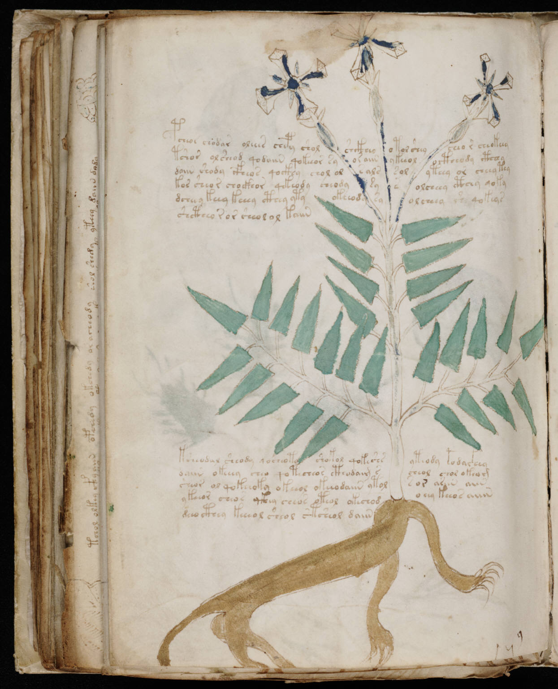

f90v1
1pcheor chodar oleees chepy sholshckheyotol sheycheor cheokeey2tshor olsheod qodaiin qokeeor syor aiinykeeoloctheody cthchy3doiin shody cfheos qockhy chol ols alssolyteey or cheeytey4kos sheor chockhor qekeody cheodysysolcheey cthey qoky5dcheey keey keeey cthey yty okeeodysyolcheey she qokeas6shctheo ror sheolol kaiin7ksheodal sheody qocheoty shokol qokeshsyteody etodaithey8daiin okeeey cheo qotecheor cthodaim scheol chol okeam9sheor ol qokeeoky okeeol okeeodaiin ytols or ariin aiin10ykeeor cheos qkhey cheos oteol okechodoeey keeos aiiin11deeocthey keeeol sheol stsheol daiin
